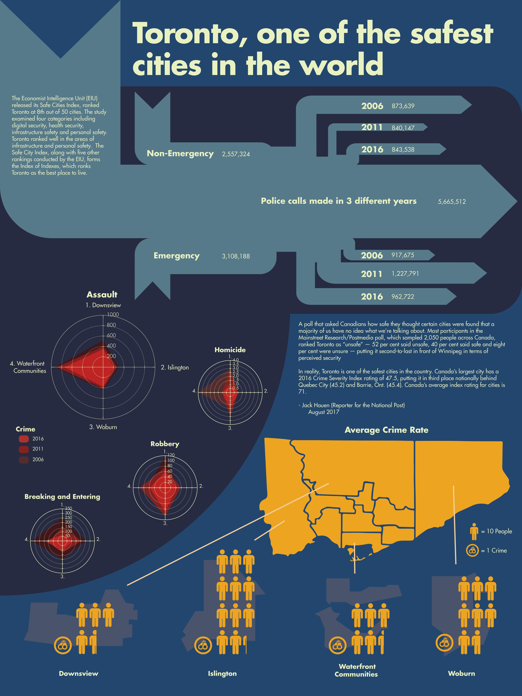
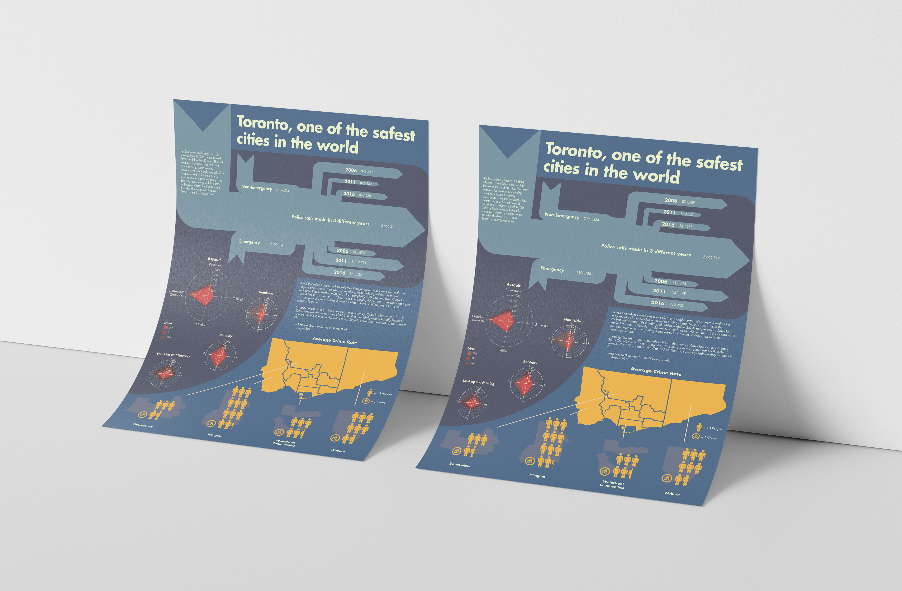

Rationale
For this project, I wanted to show how Toronto is one of the safest cities in the words despite all the bad news it has gotten over the past few years. In this design I used a series of different graphs; sankey, pictograph, and radar diagram. The sankey diagram was the main focus showing the data of emergency and non-emergency calls within Toronto in three different years. As you slowly move down, the radar graphs are placed somewhat in a similar style as it was in the first project and moving all the way down shows a pictograph displaying the crime rate of four different neighborhoods in Toronto.
The other diagram that I decided to do was a pictograph. I thought that my other two graphs were really informative and number heavy so I decided to add something that was less provoking where anyone can easily see what this data shows.
